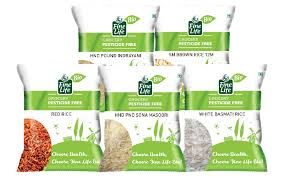
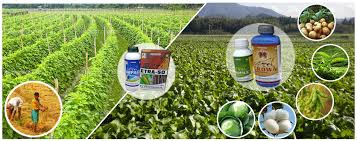

Fertilizers are compounds that are added to plants to promote growth. There are two types of
fertilizers - organic and inorganic. Organic fertilizers are carbon based and are composed of organic matter
like leaves, cow dung and parts of plants.
Inorganic fertilizers contain simple inorganic chemicals. Some of the common nutrients present in
fertilizers are nitrogen, phosphorus and potassium (NKP). They also contain secondary plant nutrients such
as calcium, sulphur and magnesium.
Some special fertilizers contain trace elements or micronutrients for the nutrition of plants like boron,
chlorine, manganese, iron, zinc, copper and molybdenum. It is vital that farmers know the exact combination
of fertilizers to be used
for a certain crop to avoid damage through excessive or improper use.
While fertilizers help in plant growth, pesticides work as a safeguard against pests. Basically, a pesticide
is a substance or mixture of substances designed for preventing, destroying, repelling or lessening the
damage of a pest. Pesticides may
be made of a chemical substance or a biological agent such as a virus, bacteria, pest repelling weeds and
pest eating insects, fish, birds and mammals. In this section, pesticides refer only to those pesticides
that include chemical substances
such as phosphamidon, lindane, chlorpyrifos, heptachlor and malathion. Many pesticides are known to be
poisonous to humans. The government has banned some pesticides while the use of others has been regulated.